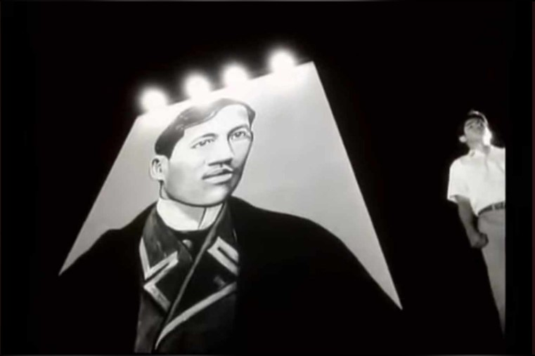
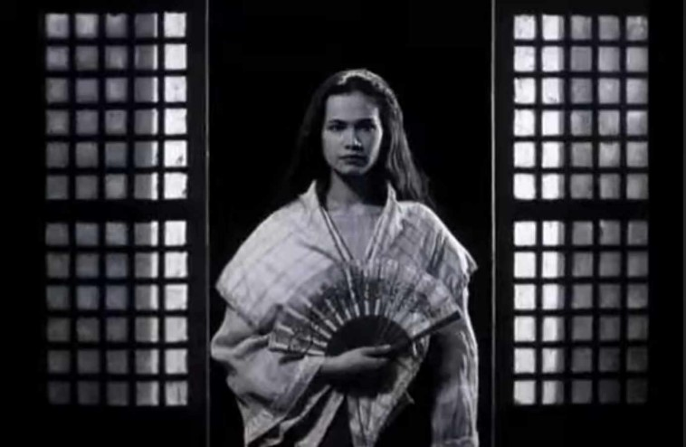
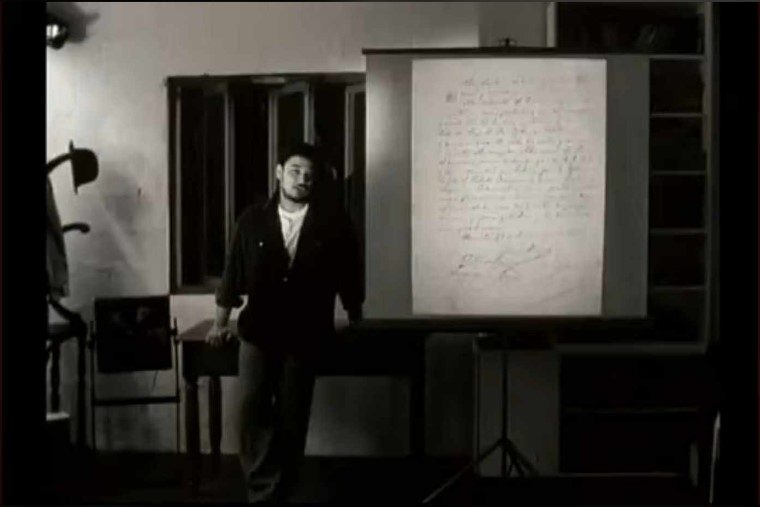
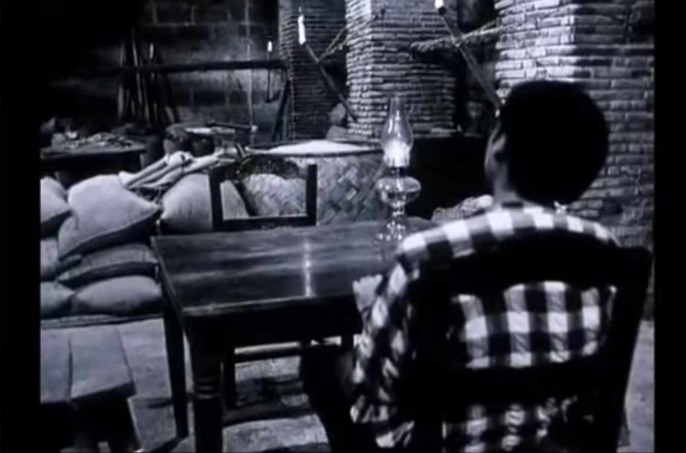
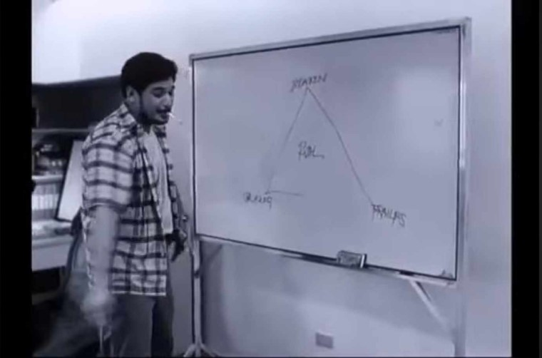
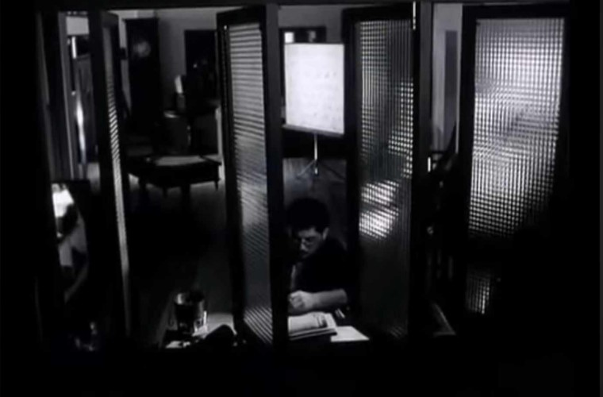
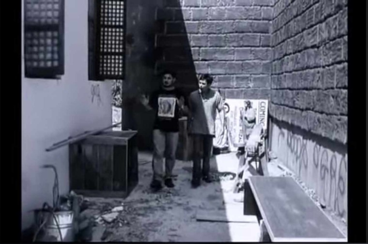
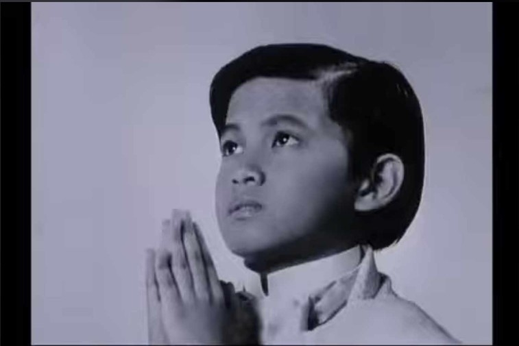
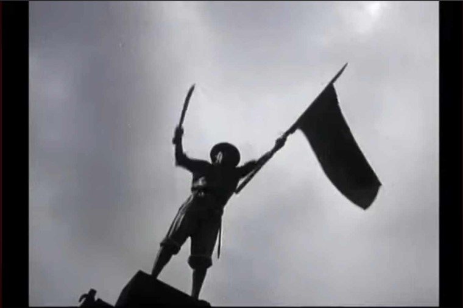
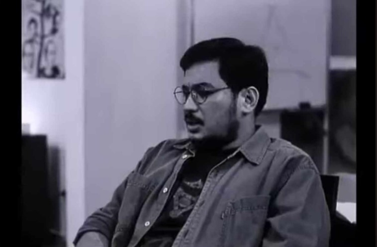

The 19th century was a crucial period in Philippine history, bringing major political, economic, social, and cultural changes. Under Spanish colonial rule, the Philippines was governed by the Governor-General, who represented the Spanish Crown. However, the colonial government was highly corrupt, with excessive taxation and widespread abuses by Spanish officials and friars. Liberal ideas from Europe, particularly from the Enlightenment and the French Revolution, influenced José Rizal and other Filipino intellectuals, shaping their desire for reform and justice.
Economically, Spain’s decision to open Manila to world trade in 1834 led to significant changes. A new middle class, the ilustrados, emerged, including Rizal’s family. While this boosted economic activity through cash crops like sugar, tobacco, and abaca, it also worsened economic inequality. Spanish elites and friars controlled vast lands (haciendas), forcing Filipino farmers into unfair labor systems such as polo y servicios (forced labor). This growing economic disparity fueled resentment among Filipinos.
Education and social structure also played a role in the awakening of Filipino nationalism. The ilustrados studied in Europe and returned with progressive ideas, advocating for reforms. However, the education system remained under the control of Spanish friars, limiting access to knowledge for most Filipinos. The Gomburza execution in 1872 further ignited resistance, as Filipino priests like Father José Burgos fought for equal treatment in the church. Rizal, influenced by these events, strongly supported education and empowerment, including advocating for women’s rights, as seen in his letter to the women of Malolos.
This topic was chosen by this because it provides a clear understanding of the historical events that shaped Rizal’s thoughts and actions. It highlights how various political, economic, and social issues fueled Filipino nationalism and led to the eventual fight for independence. Learning about Rizal in the context of the 19th century helps in appreciating his role not just as a writer but as a key figure in the country’s fight against colonial oppression. His story remains relevant today, reminding Filipinos of the importance of education, critical thinking, and standing up against injustices.
1. The filmmakers discuss their intent to create a film about José Rizal. What challenges do they
anticipate in portraying his life?
 -----------The filmmakers express their struggle in portraying Rizal's life due to the complexity of his character and the controversies surrounding his heroism. At 00:06, they mention that questioning Rizal's heroism itself could be seen as controversial, and they are unsure whether their film is a serious historical piece or something more playful. They also struggle with understanding what kind of film they are making, as they feel they are either playing with the subject or being played by it. By 06:32, they delve into the challenge of balancing Rizal's intellectual contributions with his personal life, questioning whether he was truly a revolutionary or just an intellectual who inspired revolution. The filmmakers are aware of the weight of Rizal's legacy and the difficulty in capturing his essence without oversimplifying or misrepresenting him.
2. A debate arises about the authenticity of Rizal's retraction document. What are the main
arguments presented regarding its validity?
 -----------The authenticity of Rizal's retraction document is a major point of contention in the film. At 07:30, the film introduces the retraction controversy, with some characters arguing that the text of the document is genuine but the signature is questionable.
-----------By 44:26, the filmmakers explore the possibility that the document was forged, with some suggesting that the Catholic Church may have fabricated it to discredit Rizal's anti-clerical stance. At 55:54, the film highlights the lack of consensus among historians and Rizal's family, with some family members denying the existence of the retraction. The film ultimately leaves the question unresolved, emphasizing the ambiguity and the lack of definitive evidence.
3. The character of Josephine Bracken is introduced. How does the film depict her relationship with
Rizal?
 -----------Josephine Bracken is introduced as a controversial figure in Rizal's life. At 34:41, the film explores her relationship with Rizal, depicting her as a woman who deeply loved him but faced societal judgment. By 36:13, the film delves into the speculation surrounding their relationship, with some characters questioning whether Josephine was genuinely in love with Rizal or if she had ulterior motives.
-----------At 37:39, the film hints at scandal, with some characters suggesting that Josephine's stepfather molested her, adding another layer of complexity to her character. The film portrays their relationship as both tender and fraught with controversy, leaving the audience to question the true nature of their bond.
4. The filmmakers interview a historian about Rizal's alleged retraction. What evidence is provided
to support or refute the claim?
 -----------The film interviews a historian to discuss Rizal's alleged retraction. At 55:54, the historian mentions that the retraction document was found in the archives of the Catholic Church, but its authenticity is questionable. By 56:42, the historian notes that Rizal's family has consistently denied the existence of the retraction, and no concrete evidence has been provided to prove its validity.
-----------The film also references an interview with Rizal's sister, Trining, at 58:07, where she denies any knowledge of the retraction, further casting doubt on its authenticity. The historian concludes that the retraction controversy remains unresolved due to the lack of definitive evidence.
5. The film presents different portrayals of Rizal’s execution. How does each version differ, and what
do these differences suggest?
 -----------The film presents multiple versions of Rizal's execution, each with slight variations. At 16:56, one account describes Rizal as calm and composed, facing his death with dignity. By 19:48, another version emphasizes the emotional turmoil of Rizal's family, particularly his mother, who pleads for mercy. At 01:13:24, the film depicts Rizal's final moments as a mix of resignation and defiance, with some accounts suggesting he retracted his anti-clerical views, while others argue he remained steadfast. These differing portrayals highlight the ambiguity surrounding Rizal's final moments and the difficulty in pinning down a single "true" narrative.
6. One of the characters questions whether Rizal was truly a hero. What reasoning do they give to
challenge his heroism?
 -----------One character challenges Rizal's heroism by questioning his stance on revolution. At 13:02, the character argues that Rizal was not in favor of violent revolution and instead advocated for reform, which some interpret as a lack of commitment to the cause of Philippine independence.
-----------By 01:03:15, the character questions whether Rizal's writings were enough to justify his status as a national hero, suggesting that his actions did not match the revolutionary fervor of figures like Bonifacio. The film explores the tension between Rizal's intellectual contributions and his perceived lack of direct involvement in the revolution.
7. A scene features a discussion about Rizal’s religious beliefs. How does the film depict his stance
on faith and the Catholic Church?
 -----------The film depicts Rizal as a man who struggled with his faith and the Catholic Church. At 07:30, the film introduces the controversy over whether Rizal retracted his anti-clerical views before his execution. By 22:28, the film explores Rizal's internal conflict, with some characters arguing that he remained critical of the Church until the end. At 01:13:24, the film depicts Rizal's alleged retraction, with some accounts suggesting he returned to the Catholic faith, while others argue it was a fabrication.
-----------The film leaves the question of Rizal's true religious beliefs unresolved, emphasizing the complexity of his relationship with the Church.
8. The film uses a unique narrative style, including fictionalized conversations with Rizal. How does
this technique affect storytelling?
 -----------Lhe film uses fictionalized conversations with Rizal, blending historical facts with imaginative dialogue. At 10:18, the filmmakers introduce this technique, allowing them to explore Rizal's thoughts and motivations in a more personal and engaging way. By 01:22:51, the film uses these fictionalized conversations to delve into Rizal's inner conflicts, such as his feelings about revolution, religion, and his legacy. This narrative style adds a layer of complexity to the storytelling, as it blurs the line between fact and fiction, encouraging the audience to question the nature of historical truth.
9. At one point, the filmmakers express frustration with their research on Rizal. What specific issue
causes this frustration?
 -----------The filmmakers express frustration with their research on Rizal, particularly regarding the retraction controversy. At 45:40, they lament the lack of definitive evidence, with some characters arguing that the retraction document is a dead end. By 47:08, the filmmakers express their frustration with the conflicting accounts and the difficulty in reconciling different versions of Rizal's life. They feel that the ambiguity surrounding Rizal's retraction and other aspects of his life makes it challenging to create a coherent narrative.
10. The film concludes with a reflection on Rizal's legacy. How do the filmmakers interpret his impact
on contemporary Philippine society?
 -----------The film concludes with a reflection on Rizal's legacy, questioning his relevance in contemporary Philippine society. At 01:27:35, the filmmakers suggest that Rizal's status as a national hero is both a source of pride and a burden, as his legacy is often oversimplified or misinterpreted.
-----------By 01:28:43, the film explores the tension between Rizal's intellectual contributions and his perceived lack of direct involvement in the revolution, suggesting that his legacy is more complex than the traditional narrative of heroism. The film ultimately leaves the audience to ponder the true meaning of Rizal's legacy and its impact on modern Philippine society.